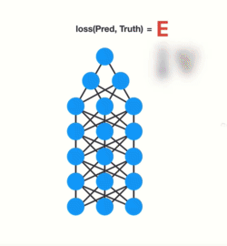
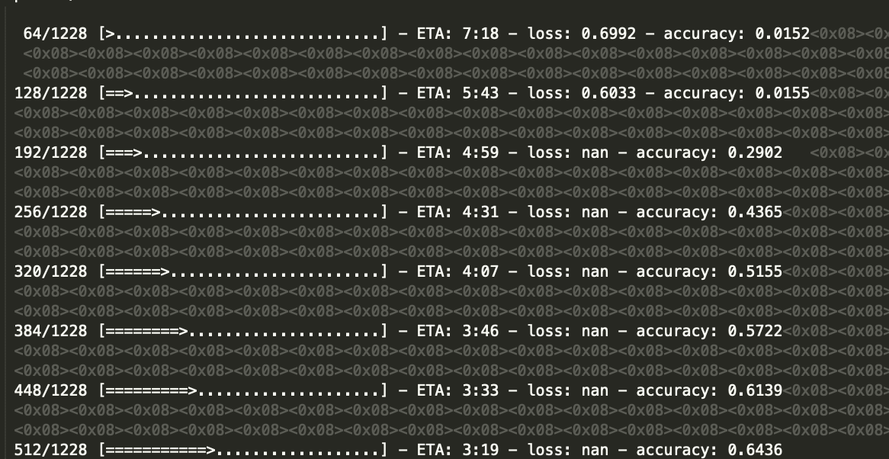
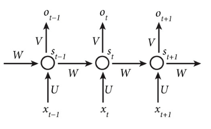
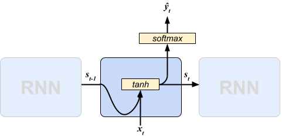
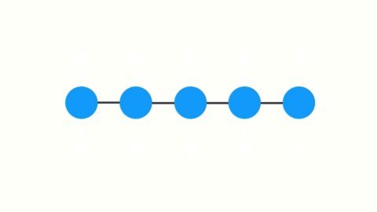
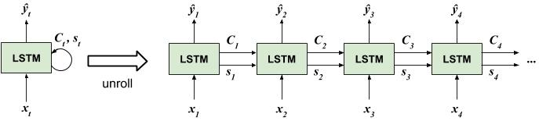
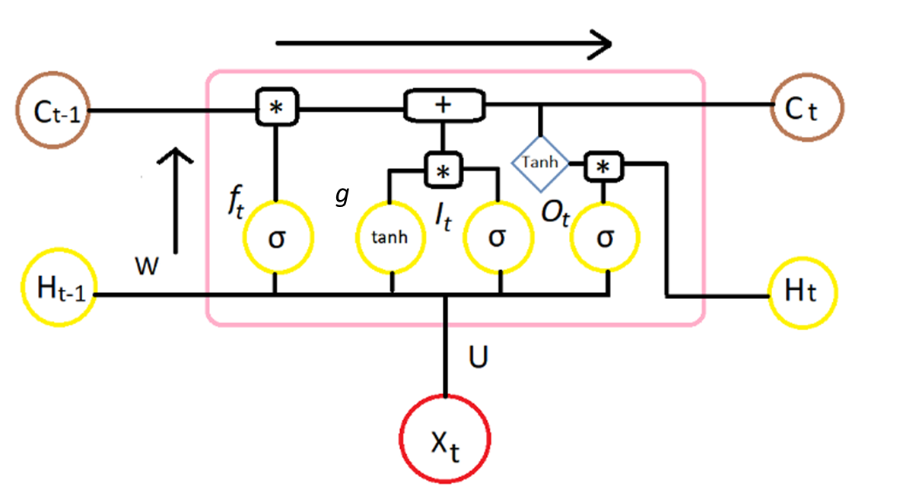

Deep Neural Network
Before we further discuss the Long Short-Term Memory Model, we will first discuss the term of Deep learning where the main idea is on the Neural Network. So Neural Network is one branch of machine learning where the learning process imitates the way neurons in the human brain works. In Neural Network we know several terms, such as the input layer, hidden layer, and output layer. So the different betweetn Deep Learning and Neural Network architecture is the number of hidden layers specified. Simple Neural Network only has 1 hidden layer, whereas Deep Learning has more than 1 hidden layer.

Nerual Network architecture can also be characterized based on the direction of signal in training process: feed-forward and recurrent. In this material, we will discuss more the Recurrent Neural Network architecture.
We know that neural network uses an algorithm called Backpropagation to update the weights of the network. So what Backpropogation does is it first calculates the gradients from the error using the chain rule, then in updates the weights (Gradient Descent).
When doing backpropogation in simple neural network (1 hidden layer) we might not encounter the problem update weights. But….
When we build an architecture with a large number of hidden layer (Deep Neural Network) the model is likely to encounter update weight problem called vanishing / exploding gradient descent.
Vanishing / Exploding Gradient Descent
Vanishing Gradient Descent: the update value obtained will exponentially decrease when heading to the input layer. Here are the illustrations, which I took from: Michael Nguyen’s article

Gradient descent aims to adjust weights that allow the model to ‘learn’. the nature of the gradient that is, the greater the value of the gradient in the current layer, will affect in the next layer getting bigger. and vice versa. This is the problem. When doing BP, each node will calculate the gradient value and update its weight according to the gradient effect on the previous layer. so if the previous layer is small, then adjusting the weights in the current layer will be small. it causes the gradient to shrink exponentially when it goes to the input layer. so that when in the input layer it fails to do the learning due to vanishing gradient problems. so the model fails to learn when a pass forward is made again to make predictions.
Exploding Gradient Descent: the update value obtained will exponentially increase when heading to the input layer. The characteristics of the model have an exploding gradient problem, which is when the cost function results are NaN.

Here is a link duscussion regarding to exploding grgadient descent: nan loss when training NN
Recurrent Neural Network
From the vasishing / exploding gradient problem mentioned above, the development of architecture from the RNN, namely LSTM and GRU, is able to handle the problem. will be discussed below. RNN itself has not been able to handle vanishing gradients due to short-term memory problems.
So what is RNN? RNN is a deep learning architecture model that is commonly used for sequential data. What’s the sequential data? The following are examples of sequential data cases:
- Sentiment classification. Input: text, output: rating/sentiment class.
- Translator. Input: text, output: text translator.
- Time series data: input: Numeric, output: forecasting result.
- Speech Recognation: input: audio, output: text.
RNN Concept
The main idea of RNN is to utilize sequential information processing. RNN is called repetitive because it performs the same task for each successive element, with output depending on the previous calculation.

The diagram above is the architecture of RNN after opening it unfolded. Suppose we have a sentence consisting of 10 words, it means that there will be 10 NN-layers formed separately. Each layer represents each word. The following are some explanations of the notation in the diagram above:
- \(x_t\) is an input at (time) \(t\).
- RNN stores an internal state \(S_t\) which becoming a memory in RNN. \(S_t\) is calculated based on the previous hidden state and the input in the current step. The activation function of \(f\) is usually nonlinear like tanh or ReLU.
- \(O_t\) is an output from each step \(t\)
Forward Pass
For example case studies related to sentiment classification. Then the input will contain one-hot vectors of words, and the output is a sentiment class. So a feed-forward pass scheme is performed as:

- Each layer describes each word.
- For an explanation of the concept of the Forward pass, we look at the layer when \(t\) (in the middle).
- Remember that the RNN pays attention to the output calculation data at \(t - 1\). So initially we have to calculate the state at \(S_t\) first. Involving the multiplication of the input matrix \(x_t\) with the parameter \(U\) and summing the results of the product \(s_{t1}\). Then the results are processed with the tanh activation function. The calculation details are as follows:
- The results from \(s_t\) are then passed to the output by tiling the matrix multiplication of the \(V\) parameters and then passed with the softmax activation function. The details are as follows:
The above process is often illustrated like:

Backpropogation Through Time
The purpose of the RNN model training is to find the parameters \(U, V,\) and \(W\) which produce minimum errors. The term BTT arises because the RNN architecture pays attention to the previous time series. So to calculate the gradient at the time step \(t\), we must calculate the speech at step \(t − 1, t − 2, t − 3\) until it is at time \(t = 1\). If you are curious about how this algorithm works, I suggest to read more on this article: Part 3: Backpropogarion & Vanishing Gradient.

As mentioned in the previous chapter, the RNN model also has a vanishing gradient problem, because it cannot capture long-term dependencies. because the number of layers is too long, making the backprop process produces a gradient value that is getting smaller and even close to zero or is said to disappear when it arrives at the initial layers.
This is caused by the multiplication properties between fractions. Imagine that for example a fraction is 1/4, multiplied by another fraction such as 1/3, then in one operation the value is 1/12. Multiplied by other fractions such as 1/5, the value becomes 1/60, etc. This value will shrink exponentially, and with a small fractional value and many multiplication operations, the value will be close to zero.
To overcome this problem, there is a development of RNN model namely Long-Term Short Memory (LSTM).
LSTM
Just like RNN, LSTM has a sequential model which is illustrated with a green box. if unfolded the architecture becomes as below:

The difference between RNN and LSTM is that it has additional signal information that is given from one time step to the next time step which is commonly called “cell memory”. LSTM is designed to overcome the problem of vanishing gradient, using the gate mechanism.
LSTM Network
So the components in LSTM consist of:
- Forget Gate f (NN with sigmoid as activation function).
- Candidate Layer g (NN with tanh as activation function).
- Input Gate I (NN with sigmoid as activation function).
- Output Gate O (NN with sigmoid as activation function).
- Hidden State H (vector).
- Memory State C (vector).
The following is the LSTM diagram at the t-time step.

- \(X_t\) = Input vector at the t-time.
- \(H_{t−1}\) = Previous Hidden state.
- \(C_{t−1}\) = Previous Memory state.
- \(H_t\) = Current Hidden state.
- \(C_t\) = Current Memori state.
- [*] = multiplication operation.
- [+] = addition operation.
so the input of each LSTM module is \(X_t\) (current input), \(H_{t − 1}\), and \(C_{t − 1}\). then the output is \(H_t\), and \(C_t\).
extracted from Denny Britz’s article which is a summary of Christopher Olah’s article: Understanding LSTM Networks.
- \(l, f, O\) is the Input, Forget, and Output gates. Both input, forget, and output have the same function formula (sigmoid), which only distinguishes the matrix parameters (note the formula below). This means that the output of this gate has a vector of values between 0 to 1. zero means that the information is blocked completely, and one means that all information is included. The gate input controls how many states you have just computed for the current input that you want to let pass. The forget gate controls how many previous states you want to let pass. Finally, the gate output controls how many internal states you want to expose to the network (higher layer & next time step). All gates have the same dimensions as the hidden state dimension (etc.) as a measure for the hidden state. The output of the sigmoid gate will be multiplied by another value to control how much that value is used.
\(f= \sigma(x_tU^f + s_{t-_1}W^f)\)
\(O= \sigma(x_tU^O + s_{t-_1}W^O)\)
value 1 means “really take care of this element” while 0 means “completely get rid of this element”.
\(g\) is a “candidate” hidden state that is computed based on the current input and the previous hidden state.
\(c_t\) is the internal memory of the unit. It is a combination of the previous memory \(c_{t-1}\) multiplied by the forget gate, and the newly computed hidden state g, multiplied by the input gate. Thus, intuitively it is a combination of how we want to combine previous memory and the new input.
Implementation LSTM with Keras
# load packages required
library(keras)
library(RVerbalExpressions)
library(magrittr)
library(textclean)
library(tidyverse)
library(tidytext)
library(rsample)
library(yardstick)
library(caret)
#set seed keras for reproducible result
use_session_with_seed(2)
# set conda env
use_condaenv("tensorflow")Import Data
In this example we will use a case study of sentiment tweets about airlines in the US obtained from Kaggle.
data <- read_csv("data_input/tweets.csv")
glimpse(data)## Observations: 14,640
## Variables: 15
## $ tweet_id <dbl> 5.703061e+17, 5.703011e+17, 5.703...
## $ airline_sentiment <chr> "neutral", "positive", "neutral",...
## $ airline_sentiment_confidence <dbl> 1.0000, 0.3486, 0.6837, 1.0000, 1...
## $ negativereason <chr> NA, NA, NA, "Bad Flight", "Can't ...
## $ negativereason_confidence <dbl> NA, 0.0000, NA, 0.7033, 1.0000, 0...
## $ airline <chr> "Virgin America", "Virgin America...
## $ airline_sentiment_gold <lgl> NA, NA, NA, NA, NA, NA, NA, NA, N...
## $ name <chr> "cairdin", "jnardino", "yvonnalyn...
## $ negativereason_gold <lgl> NA, NA, NA, NA, NA, NA, NA, NA, N...
## $ retweet_count <dbl> 0, 0, 0, 0, 0, 0, 0, 0, 0, 0, 0, ...
## $ text <chr> "@VirginAmerica What @dhepburn sa...
## $ tweet_coord <chr> NA, NA, NA, NA, NA, NA, NA, NA, N...
## $ tweet_created <chr> "2015-02-24 11:35:52 -0800", "201...
## $ tweet_location <chr> NA, NA, "Lets Play", NA, NA, NA, ...
## $ user_timezone <chr> "Eastern Time (US & Canada)", "Pa...Text Pre-Processing
Setup regex
mention
mention <- rx() %>%
rx_find(value = "@") %>%
rx_alnum() %>%
rx_one_or_more()
mention## [1] "(@)[A-z0-9]+""@VirginAmerica What @dhepburn said." %>%
str_remove_all(pattern = mention) %>%
str_squish()## [1] "What said."hashtag
hashtag <- rx() %>%
rx_find(value = "#") %>%
rx_alnum() %>%
rx_one_or_more()
hashtag## [1] "(#)[A-z0-9]+""@VirginAmerica I'm #elevategold for a good reason: you rock!!" %>%
str_remove_all(pattern = mention) %>%
str_remove_all(pattern = hashtag) %>%
str_squish()## [1] "I'm for a good reason: you rock!!"question mark
question <- rx() %>%
rx_find(value = "?") %>%
rx_one_or_more()
question## [1] "(\\?)+"exclamation mark
exclamation <- rx() %>%
rx_find(value = "!") %>%
rx_one_or_more()
exclamation## [1] "(!)+"punctuation
punctuation <- rx_punctuation()
punctuation## [1] "[[:punct:]]"number
number <- rx_digit()
number## [1] "\\d"dollar sign
dollar <- rx() %>%
rx_find("$")
dollar## [1] "(\\$)"Text Cleansing
replace_url
"@VirginAmerica Really missed a prime opportunity, there. https://t.co/mWpG7grEZP" %>%
replace_url()## [1] "@VirginAmerica Really missed a prime opportunity, there. "replace_emoticon
"@SouthwestAir thanks! Very excited to see it :3" %>%
replace_emoticon()## [1] "@SouthwestAir thanks! Very excited to see it smiley "replace_contruction
"@united I'd thank you - but you didn't help. taking 6 hours to reply isn't actually helpful" %>%
replace_contraction()## [1] "@united I would thank you - but you did not help. taking 6 hours to reply is not actually helpful"replace_word_elongation
"@VirginAmerica heyyyy guyyyys.. :/" %>%
replace_word_elongation()## [1] "@VirginAmerica hey guys.. :/"data <- data %>%
mutate(
text_clean = text %>%
replace_url() %>%
replace_emoji() %>%
replace_emoticon() %>%
replace_html() %>%
str_remove_all(pattern = mention) %>%
str_remove_all(pattern = hashtag) %>%
replace_contraction() %>%
replace_word_elongation() %>%
str_replace_all(pattern = question, replacement = "questionmark") %>%
str_replace_all(pattern = exclamation, replacement = "exclamationmark") %>%
str_remove_all(pattern = punctuation) %>%
str_remove_all(pattern = number) %>%
str_remove_all(pattern = dollar) %>%
str_to_lower() %>%
str_squish()
)data %>%
select(text, text_clean) %>%
sample_n(20)## # A tibble: 20 x 2
## text text_clean
## <chr> <chr>
## 1 @united How can I file a claim whe~ how can i file a claim when your ag~
## 2 @USAirways Seriously. You can't tw~ seriously you can not tweet and let~
## 3 @JetBlue thank you will do!! You g~ thank you will doexclamationmark yo~
## 4 @united what's the hold up with fl~ what is the hold up with flight fro~
## 5 @AmericanAir ticks me off. ticks me off
## 6 @AmericanAir but at least your aut~ but at least your automated message~
## 7 @united the hotel you sent us to w~ the hotel you sent us to wouldnt ta~
## 8 @AmericanAir your definition and m~ your definition and mine of min is ~
## 9 @JetBlue why are you always so ama~ why are you always so amazingexclam~
## 10 @JetBlue and The from @WSJ Team to~ and the from team to offer in acces~
## 11 @JetBlue Oh that totally looks on ~ oh that totally looks on par with s~
## 12 "@united Thank you!! \U0001f60a" thank youexclamationmark smiling fa~
## 13 @USAirways Still irritated that ou~ still irritated that our well plann~
## 14 @united Sure. Follow for a sec an~ sure follow for a sec and i will
## 15 "@SouthwestAir your A-list program~ your alist program is a complete jo~
## 16 @AmericanAir Thanks, both airlines~ thanks both airlines said that it i~
## 17 @AmericanAir Thank you. Good sugge~ thank you good suggestion i checked~
## 18 @united care less about the person~ care less about the person although~
## 19 @SouthwestAir I was helped by a ni~ i was helped by a nice lady at phx ~
## 20 @united we've been here since 3am ~ we have been here since am and you ~prepare datainput
data <- data %>%
mutate(label = factor(airline_sentiment, levels = c("negative", "neutral", "positive")),
label = as.numeric(label),
label = label - 1) %>%
select(text_clean, label) %>%
na.omit()
head(data, 10)## # A tibble: 10 x 2
## text_clean label
## <chr> <dbl>
## 1 what said 1
## 2 plus you have added commercials to the e tongue sticking out erie~ 2
## 3 i did not today must mean i need to take another tripexclamationm~ 1
## 4 it is really aggressive to blast obnoxious entertainment in your ~ 0
## 5 and it is a really big bad thing about it 0
## 6 seriously would pay a flight for seats that did not have this pla~ 0
## 7 yes nearly every time i fly vx this ear worm won t go away smiley 2
## 8 really missed a prime opportunity for men without hats parody the~ 1
## 9 well i did not but now i doexclamationmark laughing 2
## 10 it was amazing and arrived an hour early you are too good to me 2Tokenizer
Tokenizer aims to separate each word in the entire document into a token form. The num_words parameter is for setting the maximum number of words to be used, sorted according to the largest frequency order. words that rarely appear will be removed. from a total of 13291 unique words contained in the text data, we reduced it to 1024 which will be used to make the model. The lower parameter is a logic condition, if TRUE then all words will be transformed to lowercase (tolower).
num_words <- 1024
# prepare tokenizers
tokenizer <- text_tokenizer(num_words = num_words,
lower = TRUE) %>%
fit_text_tokenizer(data$text_clean)paste("number of unique words:", length(tokenizer$word_counts))## [1] "number of unique words: 13291"Intuition
Suppose we have 5 pieces of text documents that are stored in the docs object. Then we made a token with a maximum of words / terms used, which is 4. It means that words that rarely appear will not be used during the train model. To see the number of unique words stored in the document dictionary, use the command token$word_counts. To see the list of words with the highest frequency of appearances, use the token$word_index command.
docs <- c('Well done!',
'Good work',
'Great effort',
'nice work',
'Excellent!')
tokendocs <- text_tokenizer(num_words = 4,
lower = TRUE) %>%
fit_text_tokenizer(docs)paste("number of unique words",length(tokendocs$word_counts))## [1] "number of unique words 8"tokendocs$word_index[1:4]## $work
## [1] 1
##
## $well
## [1] 2
##
## $done
## [1] 3
##
## $good
## [1] 4Splitting Data
Splitting data will be done into 3 parts, namely train, validation, and test. The proportion is 60% for trains and the remaining 40% is in partitions for data validation and testing.

Data Train is the data that we will use to train the model. Data Validation for evaluating hyperparameter tuning in models (adjust hidden layers, optimizers, learning rates, etc.). While the test data as an evaluator of the model that we make on unseen data.
set.seed(100)
intrain <- initial_split(data = data, prop = 0.8, strata = "label")
data_train <- training(intrain)
data_test <- testing(intrain)
set.seed(100)
inval <- initial_split(data = data_test, prop = 0.5, strata = "label")
data_val <- training(inval)
data_test <- testing(inval)maxlen <- max(str_count(data$text_clean, "\\w+")) + 1
paste("maxiumum length words in data:", maxlen)## [1] "maxiumum length words in data: 90"# prepare x
data_train_x <- texts_to_sequences(tokenizer, data_train$text_clean) %>%
pad_sequences(maxlen = maxlen)
data_val_x <- texts_to_sequences(tokenizer, data_val$text_clean) %>%
pad_sequences(maxlen = maxlen)
data_test_x <- texts_to_sequences(tokenizer, data_test$text_clean) %>%
pad_sequences(maxlen = maxlen)
# prepare y
data_train_y <- to_categorical(data_train$label, num_classes = 3)
data_val_y <- to_categorical(data_val$label, num_classes = 3)
data_test_y <- to_categorical(data_test$label, num_classes = 3)Intuition
Command texts_to_sequence() aims to create a matrix results of the transformation text to the form of a number sequence (integer). Then wrapped with the command pad_sequences() which aims to equalize the dimensions of the length on the entire document. Imagine the input layer of a matrix, it must have the same row and column. Therefore it is necessary to do padding. By default the value parameter will be set to 0. This means that if there are words that are not in our token (which has been limited by num_words) then it will be transformed to 0. The following is the illustration:
texts_to_sequences(tokendocs, c("Excellent!",
"Good job bro, keep hard work",
"well done")) %>%
pad_sequences(maxlen = 5)## [,1] [,2] [,3] [,4] [,5]
## [1,] 0 0 0 0 0
## [2,] 0 0 0 0 1
## [3,] 0 0 0 2 3The result of text_to_sequences is a matrix of size \(n ∗ maxlen\). The example above consists of 3 text documents and is set to maxlen = 5. it will produce a \(3 \times 5\) matrix which each index is a representative integer of the same words as tokendocs in the i-th list. Recall, the word done is on the 3rd list on our token, right? therefore the matrix result above in the third document and the last integer sequence is 3. Why does it appear in the last index? because in pad_sequences we don’t set parameters of the padding type whether “pre” or “post” and by default is “pre”.
tokendocs$word_index[3]## $done
## [1] 3Architecture
Embedding Layer
Embedding Layers can only be used in the initial / first layer of the LSTM architecture. In a variety of deep learning frameworks such as Keras, the embedding layer aims to train text data into numerical vectors which represent the closeness of the meaning of each word.
Embedding layer accepts several parameters. Some examples are:
* input_dim, which is the maximum dimension of the vocabulary that has been explained in the num_words section.
input_length, the maximum length of the word sequence in the document input.output_dimwhich is the embedding dimension of the output layer which will be passed to the next layer. generally is 32, but can be more dependent on the problem we face.
Input received of 2D vectors with the form: {batch_size, sequence_length}, while the output received 3D tensor with the forms {batch_size, sequence_length, output_dim}.
Deep Neural Layer
The Deep Network Layer accepts the embedding matrix as input and then is converted into smaller dimensions. The dimensions of the compression results have represented information from the data. In the case of data text, the deep learning architecture commonly used is RNN > LSTM / GRU.
you can check the Keras Documentation for the details sequential layers.
Output Layer
This output layer is the last layer in the deep learning architecture. At Keras use the layer_dense command where we need to set the unit parameters or how many neurons we want to build. In this case I use 3 units, because there are 3 classes we have (negative, neutral, positive).
Random Initialization
When the neural network / deep learning model train often results in different results. Why? because NN and DL use weigth which is generated randomly (randomness initialization). therefore we need to set the numbers (x-random models) in order to get a fixed result when repeated in the train (reproducible result). this can be done with the seed parameter in the initializer_random_uniform command. for more details, read the question and answer article in Keras studio
# initiate keras model sequence
model <- keras_model_sequential()
# model
model %>%
# layer input
layer_embedding(
name = "input",
input_dim = num_words,
input_length = maxlen,
output_dim = 32,
embeddings_initializer = initializer_random_uniform(minval = -0.05, maxval = 0.05, seed = 2)
) %>%
# layer dropout
layer_dropout(
name = "embedding_dropout",
rate = 0.5
) %>%
# layer lstm 1
layer_lstm(
name = "lstm",
units = 256,
dropout = 0.2,
recurrent_dropout = 0.2,
return_sequences = FALSE,
recurrent_initializer = initializer_random_uniform(minval = -0.05, maxval = 0.05, seed = 2),
kernel_initializer = initializer_random_uniform(minval = -0.05, maxval = 0.05, seed = 2)
) %>%
# layer output
layer_dense(
name = "output",
units = 3,
activation = "softmax",
kernel_initializer = initializer_random_uniform(minval = -0.05, maxval = 0.05, seed = 2)
)- Dropout parameters are added to reduce the risk of overfit. the range of dropout values between 0 to 1. commonly used is 0.2 to 0.5. the closer to 0 will tend to overfit, while the closer to 1 has the risk of underfit.
Compiling Model
For two category classes, the lost function used is binary_crossentropy while for multiclass cases it uses categorical_crossentropy. There are not only 2 option, but the most common when working with classification cases, these 2 loss functions are used. Here are some loss function options from Keras Documentation
# compile the model
model %>% compile(
optimizer = "adam",
metrics = "accuracy",
loss = "categorical_crossentropy"
)
# model summary
summary(model)## ___________________________________________________________________________
## Layer (type) Output Shape Param #
## ===========================================================================
## input (Embedding) (None, 90, 32) 32768
## ___________________________________________________________________________
## embedding_dropout (Dropout) (None, 90, 32) 0
## ___________________________________________________________________________
## lstm (LSTM) (None, 256) 295936
## ___________________________________________________________________________
## output (Dense) (None, 3) 771
## ===========================================================================
## Total params: 329,475
## Trainable params: 329,475
## Non-trainable params: 0
## ___________________________________________________________________________Train the Model
# model fit settings
epochs <- 10
batch_size <- 512
# fit the model
history <- model %>% fit(
data_train_x, data_train_y,
batch_size = batch_size,
epochs = epochs,
verbose = 1,
validation_data = list(
data_val_x, data_val_y
)
)
# history plot
plot(history)
Model Evaluation
# predict on train
data_train_pred <- model %>%
predict_classes(data_train_x) %>%
as.vector()
# predict on val
data_val_pred <- model %>%
predict_classes(data_val_x) %>%
as.vector()
# predict on test
data_test_pred <- model %>%
predict_classes(data_test_x) %>%
as.vector()# accuracy on data train
accuracy_vec(
truth = factor(data_train$label,labels = c("negative", "neutral", "positive")),
estimate = factor(data_train_pred, labels = c("negative", "neutral", "positive"))
)## [1] 0.8056534# accuracy on data test
accuracy_vec(
truth = factor(data_test$label,labels = c("negative", "neutral", "positive")),
estimate = factor(data_test_pred, labels = c("negative", "neutral", "positive"))
)## [1] 0.7895461